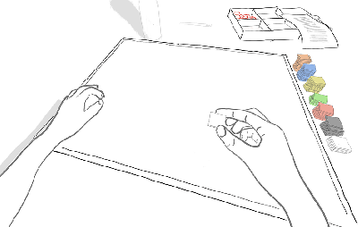
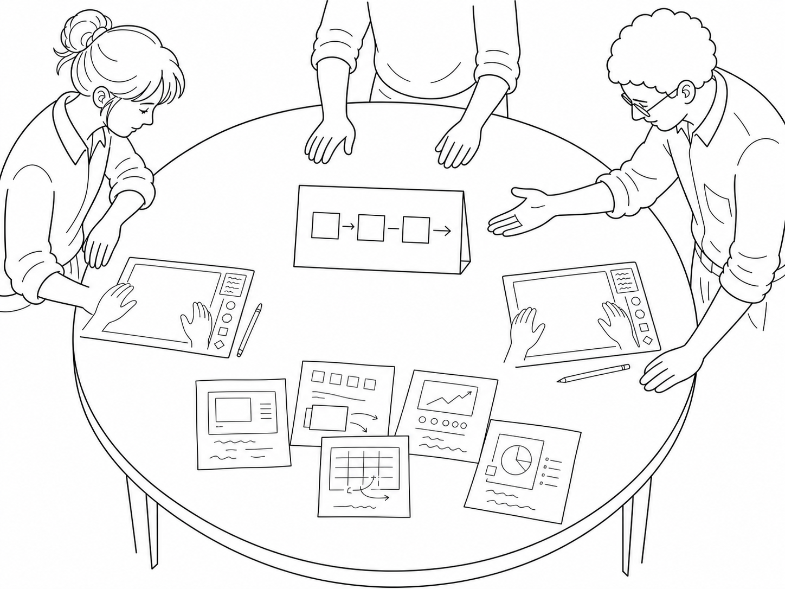
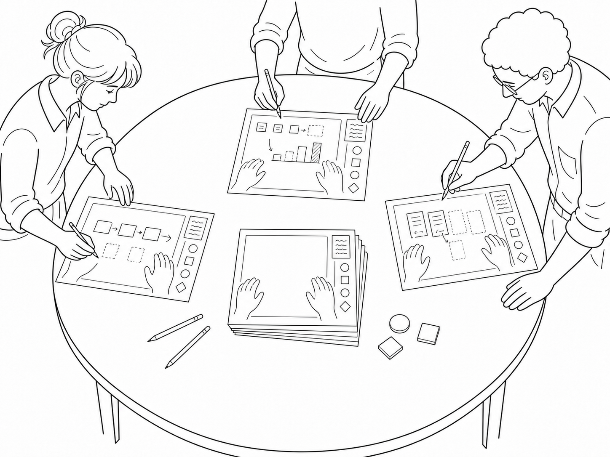
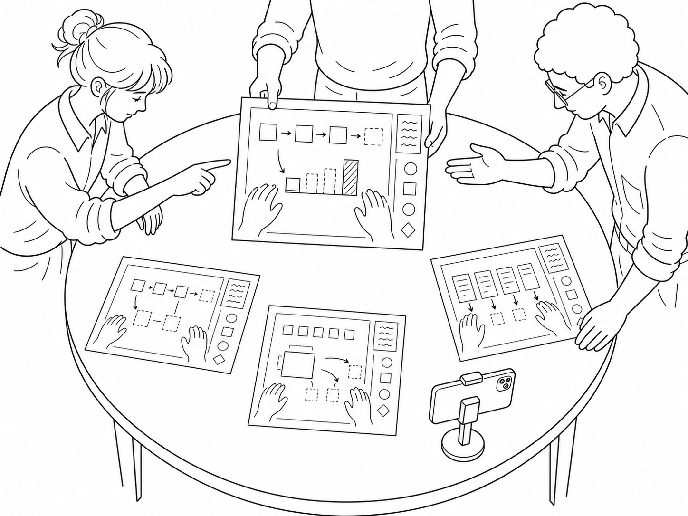
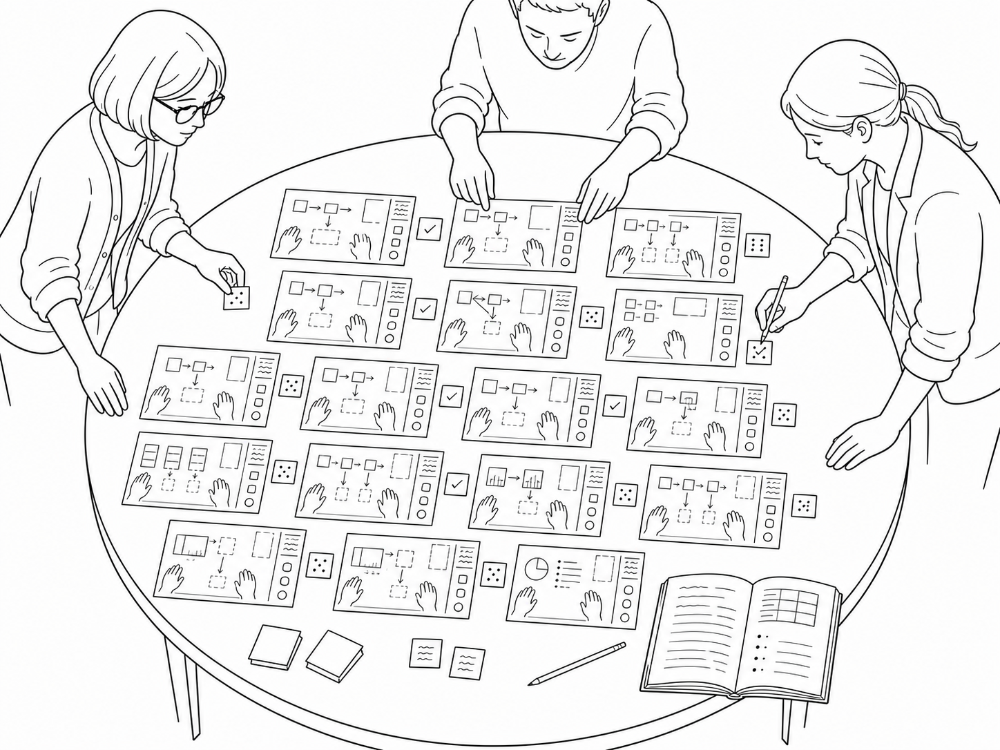
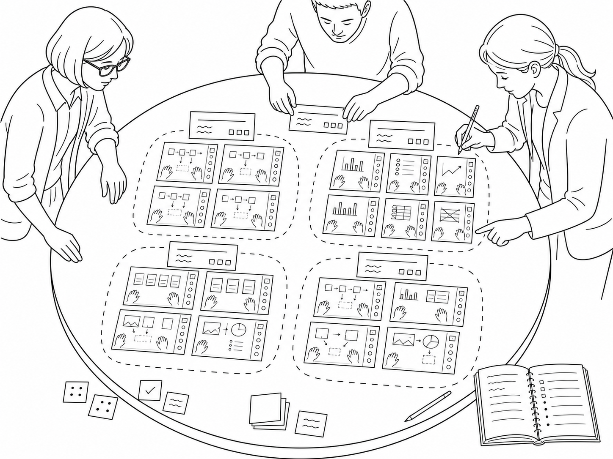
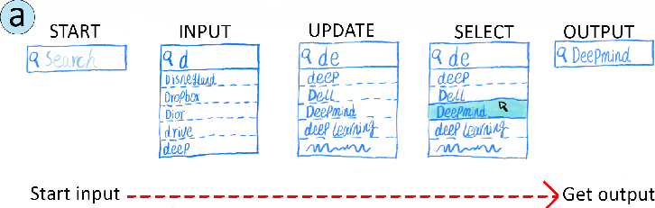
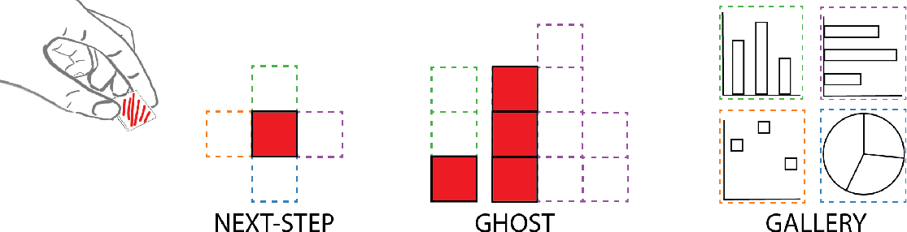

§ 01What it is.
Template-guided sketching is a method for eliciting how people would want to interact with a system that does not yet exist. Participants are introduced to a future possibility, then asked to sketch how they imagine interacting with it, drawing onto a printed template that frames the scene and gives everyone a shared starting point. Researchers collect the sketches as visual data and analyze the corpus through collaborative coding. In the source study the imagined system was a "visualization autocomplete" that suggests next steps while a person builds a chart from physical tokens.
§ 02Why use it.
Speculative design lets you study a desired interaction without committing to any particular interface or technology; the focus is the interaction, not the interface. Because participants are freed from technical constraints, their sketches surface a design space rather than feedback on a single built system. Sketching externalizes design intention, and collecting many participants' sketches reveals the range of strategies people gravitate toward. The method suits early, pre-implementation exploration, where the goal is to map possibilities before building anything.
§ 03How to do it.
Design a guiding template.
Create a printed template that depicts a neutral starting scene of the activity you are studying: enough context to orient everyone, little enough that it does not prescribe a solution. This shared frame is the method's defining device. It keeps the resulting sketches comparable without dictating what they contain.

Recruit small groups.
Work with groups of three to five participants of varying expertise. Keep each group small enough that everyone can present and discuss, but mixed enough to surface a range of perspectives. A short pre-session survey on background helps you read the corpus later.
Introduce the speculative prompt.
Present the imagined future you want participants to design for, concretely and in plain terms; a familiar metaphor often helps. Frame the brief around the interaction rather than any technology: ask them to imagine a system with no technical limits and to focus on how a person would work with it.

Sketch onto the template.
Hand out the template and ask participants to draw their ideas directly onto it. Give them a few guiding questions to answer through the drawing, and time-box the activity so they commit quickly rather than polish. If it helps ground their speculation, let them try the underlying activity by hand first.

Present and critique together.
Have each participant walk the group through their sketch, then discuss the strengths and limitations of each idea. Record the session: the spoken narration usually explains intent that the drawing alone leaves implicit.

Lay out and code the corpus.
Bring all the sketches together where the whole set is visible at once, on a wall or a digital board. Run several rounds of collaborative coding with more than one coder, refining between rounds, and consolidate a shared codebook by consensus.

Synthesize the design space.
Cluster the ideas into a small set of strategies or patterns and characterize how they differ and trade off against one another. This cross-cutting view, rather than any single sketch, is the contribution.

§ 04In practice.
In the source study the imagined system was a "visualization autocomplete" that suggests next steps while a person builds a chart from physical tokens. Participants first warmed up by assembling tokens into visualizations, were shown the autocomplete idea through the familiar search-engine metaphor, then sketched their ideal version onto a template depicting someone placing the first token on a canvas.

The four workshops with 15 participants produced 93 pages of sketches, roughly 17 design ideas. Analyzed through several rounds of collaborative coding, these resolved into three interaction strategies: NEXT-STEP (suggest the single next token position), GHOST (preview partial or complete visualizations as faint outlines), and GALLERY (offer whole-visualization options as small multiples).

Comparing the three surfaced a central trade-off: greater automation tends to reduce expressivity. NEXT-STEP keeps the most manual control and the widest range of outcomes, GALLERY automates the most but narrows the choices, and GHOST sits in between. The methodological lesson worth carrying forward is general: the template steered what people drew by giving them a shared scene to start from, which kept the sketches comparable without dictating their content.
Wei, W., Huron, S. & Jansen, Y. (2023) ‘Towards autocomplete strategies for visualization construction’. 2023 IEEE Visualization and Visual Analytics (VIS), 141–145. doi.org/10.1109/VIS54172.2023.00037
@inproceedings{Wei_2023, title={Towards Autocomplete Strategies for Visualization Construction}, url={http://dx.doi.org/10.1109/VIS54172.2023.00037}, DOI={10.1109/vis54172.2023.00037}, booktitle={2023 IEEE Visualization and Visual Analytics (VIS)}, publisher={IEEE}, author={Wei, Wei and Huron, Samuel and Jansen, Yvonne}, year={2023}, month=Oct, pages={141–145} }
Figures on this page are reused under a CC BY 4.0 license. Source and materials: hal-04394592, osf.io/nu4z3.
§ 05Ways to adapt it.
Swap the imagined system or domain to study a different future interaction. Run the workshop remotely with digital sketching when in-person sessions are not possible. Skip the grounding warm-up when participants already understand the underlying activity. Vary how much the template constrains the scene, since the frame measurably shapes what people draw: a lighter template invites wider exploration, while a heavier one keeps responses comparable.
Submit way(s) to adapt it →§ 06Other research using this method.
Akyol, E., Cabral Ramos Mota, R. & Somanath, S. (2021) 'DiaFit: designing customizable wearables for type 1 diabetes monitoring'. Extended Abstracts of the 2021 CHI Conference on Human Factors in Computing Systems (CHI EA '21), 1–6.
Submit other research using this method →